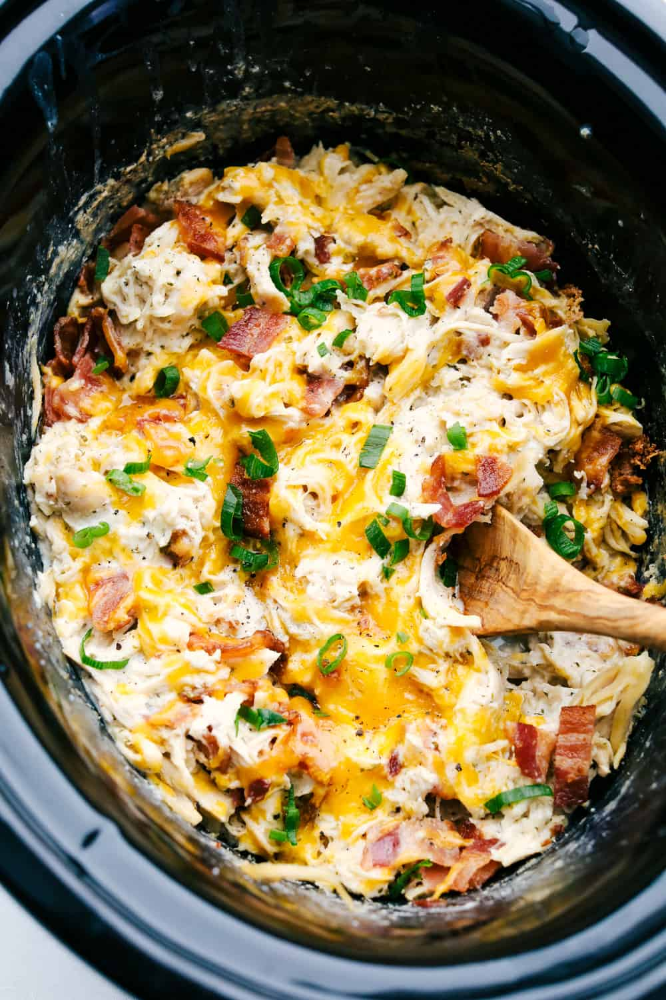

Crack Chicken

Description
This Slow Cooker Crack Chicken (Cheddar Ranch Chicken) is an addicting concoction of chicken, cheese, bacon and perfectly seasoned with ranch dressing. Cooking this in the slow cooker takes all the work out of it and makes it a super simple hearty dinner on busy days.
Ingredients
- Boneless Skinless Chicken Breasts: I love that you don’t have to pre cut these
- Ranch Seasoning:Dry Packet Mix
- Cream Cheese: Creamy and decadent filling
- Bacon: Cooked and crumbled then stirred into the chicken mix.
- Cheddar Cheese: Shredded over top and melted when warm.
- Green Onion: Top it off as a garnish!
Steps
- Slow Cooker: In the bottom of a slow cooker place the chicken. Sprinkle with dry ranch dressing. Cut the cream cheese into cubes and place over the chicken and seasoning.
- Cook: Cook on low for 6-8 hours or high for 4.
- Shred: Shred the chicken and top with bacon and cheese. Cover till melted. Garnish with green onions.